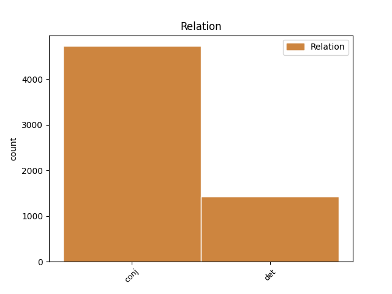
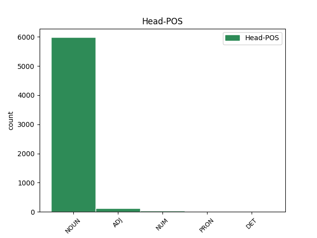
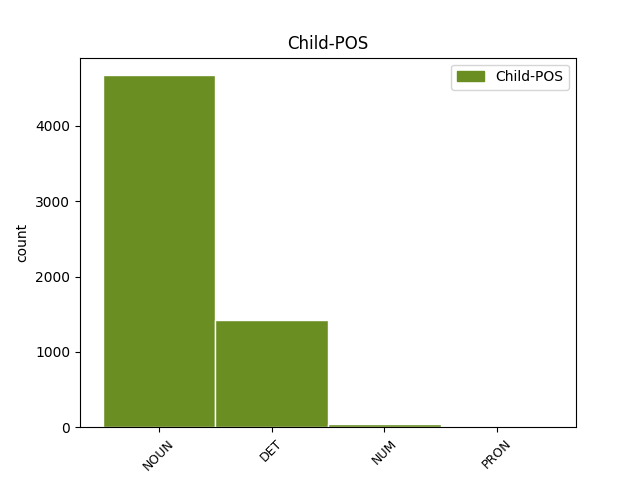

Distribution of features within this leaf



Agreement Rules sorted by frequency.
- When the dependent token is the conjunct(conj) of the head token, and the head token is NOUN and the dependent token is NOUN.
1 و _ _ _ _ 0 _ _ _
2 قال _ _ _ _ 0 _ _ _
3 باول _ _ _ _ 0 _ _ _
4 خلال _ _ _ _ 0 _ _ _
5 مؤتمر _ _ _ _ 0 _ _ _
6 صحفى _ _ _ _ 0 _ _ _
7 مشترك _ _ _ _ 0 _ _ _
8 مع _ _ _ _ 0 _ _ _
9 رئيس _ _ _ _ 0 _ _ _
10 الوزراء _ _ _ _ 0 _ _ _
11 الفلسطينى _ _ _ _ 0 _ _ _
12 أبو _ _ _ _ 0 _ _ _
13 مازن _ _ _ _ 0 _ _ _
14 عقب _ _ _ _ 0 _ _ _
15 اجتماع _ _ _ _ 0 _ _ _
16 هما _ _ _ _ 0 _ _ _
17 فى _ _ _ _ 0 _ _ _
18 أريحا _ _ _ _ 0 _ _ _
19 فى _ _ _ _ 0 _ _ _
20 الضفة _ _ _ _ 0 _ _ _
21 الغربية _ _ _ _ 0 _ _ _
22 أن _ _ _ _ 0 _ _ _
23 " _ _ _ _ 0 _ _ _
24 على _ _ _ _ 0 _ _ _
25 الحكومة _ _ _ _ 0 _ _ _
26 الفلسطينية _ _ _ _ 0 _ _ _
27 وضع وَضع NOUN N------S1R Case=Nom|Definite=Cons|Number=Sing 0 _ _ _
28 حد _ _ _ _ 0 _ _ _
29 ل _ _ _ _ 0 _ _ _
30 الإرهاب _ _ _ _ 0 _ _ _
31 و _ _ _ _ 0 _ _ _
32 تفكيك تَفكِيك NOUN N------S1R Case=Nom|Definite=Cons|Number=Sing 27 conj _ Gloss=dismantling,dismemberment,fragmentation|LTranslit=tafkīk|Root=f_k_k|Translit=tafkīku|Vform=تَفكِيكُ
33 بنية _ _ _ _ 0 _ _ _
34 ه _ _ _ _ 0 _ _ _
35 التحتية _ _ _ _ 0 _ _ _
36 " _ _ _ _ 0 _ _ _
37 . _ _ _ _ 0 _ _ _
1 و _ _ _ _ 0 _ _ _
2 كان _ _ _ _ 0 _ _ _
3 مجلس _ _ _ _ 0 _ _ _
4 الوزراء _ _ _ _ 0 _ _ _
5 الكويتى _ _ _ _ 0 _ _ _
6 قد _ _ _ _ 0 _ _ _
7 ناقش _ _ _ _ 0 _ _ _
8 في _ _ _ _ 0 _ _ _
9 جلسة _ _ _ _ 0 _ _ _
10 ه _ _ _ _ 0 _ _ _
11 اليوم _ _ _ _ 0 _ _ _
12 ما _ _ _ _ 0 _ _ _
13 يتعلق _ _ _ _ 0 _ _ _
14 ب _ _ _ _ 0 _ _ _
15 تطورات _ _ _ _ 0 _ _ _
16 الاوضاع _ _ _ _ 0 _ _ _
17 الانسانية _ _ _ _ 0 _ _ _
18 في _ _ _ _ 0 _ _ _
19 العراق _ _ _ _ 0 _ _ _
20 لاسيما _ _ _ _ 0 _ _ _
21 ما _ _ _ _ 0 _ _ _
22 يتعلق _ _ _ _ 0 _ _ _
23 ب _ _ _ _ 0 _ _ _
24 انتشار _ _ _ _ 0 _ _ _
25 مرض _ _ _ _ 0 _ _ _
26 الكوليرا _ _ _ _ 0 _ _ _
27 بين _ _ _ _ 0 _ _ _
28 افراد _ _ _ _ 0 _ _ _
29 الشعب _ _ _ _ 0 _ _ _
30 العراقي _ _ _ _ 0 _ _ _
31 لذا _ _ _ _ 0 _ _ _
32 قرر _ _ _ _ 0 _ _ _
33 ارسال _ _ _ _ 0 _ _ _
34 هذه هٰذَا DET SD----FS4- Case=Acc|Gender=Fem|Number=Sing|PronType=Dem 35 det _ Gloss=these,this|LTranslit=hāḏā|Root=h|Translit=hāḏihi|Vform=هٰذِهِ
35 الوحدات وَحدَة NOUN N------P4D Case=Acc|Definite=Def|Number=Plur 0 _ _ _
36 ل _ _ _ _ 0 _ _ _
37 تحلية _ _ _ _ 0 _ _ _
38 المياه _ _ _ _ 0 _ _ _
39 ل _ _ _ _ 0 _ _ _
40 مساعدة _ _ _ _ 0 _ _ _
41 الشعب _ _ _ _ 0 _ _ _
42 العراقي _ _ _ _ 0 _ _ _
43 و _ _ _ _ 0 _ _ _
44 توفير _ _ _ _ 0 _ _ _
45 المياه _ _ _ _ 0 _ _ _
46 الصالحة _ _ _ _ 0 _ _ _
47 ل _ _ _ _ 0 _ _ _
48 الشرب _ _ _ _ 0 _ _ _
49 . _ _ _ _ 0 _ _ _
1 و _ _ _ _ 0 _ _ _
2 أشار _ _ _ _ 0 _ _ _
3 العيار _ _ _ _ 0 _ _ _
4 الى _ _ _ _ 0 _ _ _
5 استمرار _ _ _ _ 0 _ _ _
6 المساعدات _ _ _ _ 0 _ _ _
7 و _ _ _ _ 0 _ _ _
8 في _ _ _ _ 0 _ _ _
9 جميع _ _ _ _ 0 _ _ _
10 المجالات _ _ _ _ 0 _ _ _
11 الغذائية _ _ _ _ 0 _ _ _
12 و _ _ _ _ 0 _ _ _
13 الدوائية _ _ _ _ 0 _ _ _
14 و _ _ _ _ 0 _ _ _
15 الصحية صِحِّيّ ADJ A-----FS2D Case=Gen|Definite=Def|Gender=Fem|Number=Sing 0 _ _ _
16 و _ _ _ _ 0 _ _ _
17 غير غَير NOUN N------S2R Case=Gen|Definite=Cons|Number=Sing 15 conj _ Gloss=non_-,not,other,unlike|LTranslit=ġayr|Root=.g_y_r|Translit=ġayri|Vform=غَيرِ
18 ها _ _ _ _ 0 _ _ _
19 موضحا _ _ _ _ 0 _ _ _
20 أن _ _ _ _ 0 _ _ _
21 ما _ _ _ _ 0 _ _ _
22 يتعلق _ _ _ _ 0 _ _ _
23 ب _ _ _ _ 0 _ _ _
24 وزارة _ _ _ _ 0 _ _ _
25 الكهرباء _ _ _ _ 0 _ _ _
26 و _ _ _ _ 0 _ _ _
27 الماء _ _ _ _ 0 _ _ _
28 ف _ _ _ _ 0 _ _ _
29 إن _ _ _ _ 0 _ _ _
30 ها _ _ _ _ 0 _ _ _
31 لا _ _ _ _ 0 _ _ _
32 تزال _ _ _ _ 0 _ _ _
33 تقدم _ _ _ _ 0 _ _ _
34 المياه _ _ _ _ 0 _ _ _
35 العذبة _ _ _ _ 0 _ _ _
36 الى _ _ _ _ 0 _ _ _
37 العراق _ _ _ _ 0 _ _ _
38 " _ _ _ _ 0 _ _ _
39 ف _ _ _ _ 0 _ _ _
40 هناك _ _ _ _ 0 _ _ _
41 أنبوب _ _ _ _ 0 _ _ _
42 يصب _ _ _ _ 0 _ _ _
43 يوميا _ _ _ _ 0 _ _ _
44 في _ _ _ _ 0 _ _ _
45 العراق _ _ _ _ 0 _ _ _
46 ب _ _ _ _ 0 _ _ _
47 طاقة _ _ _ _ 0 _ _ _
48 مليون _ _ _ _ 0 _ _ _
49 و _ _ _ _ 0 _ _ _
50 نصف _ _ _ _ 0 _ _ _
51 المليون _ _ _ _ 0 _ _ _
52 جالون _ _ _ _ 0 _ _ _
53 " _ _ _ _ 0 _ _ _
54 . _ _ _ _ 0 _ _ _
1 و _ _ _ _ 0 _ _ _
2 ذكر _ _ _ _ 0 _ _ _
3 البيان _ _ _ _ 0 _ _ _
4 ان _ _ _ _ 0 _ _ _
5 الاثنين اِثنَان NUM QU----M-4D Case=Acc|Definite=Def|Gender=Masc|NumForm=Word 0 _ _ _
6 و _ _ _ _ 0 _ _ _
7 العشرين عِشرُون NUM QL------4D Case=Acc|Definite=Def|NumForm=Word 5 conj _ Gloss=twenty|LTranslit=ʿišrūn|Root=`_^s_r|Translit=al-ʿišrīna|Vform=اَلعِشرِينَ
8 فلبينيا _ _ _ _ 0 _ _ _
9 قد _ _ _ _ 0 _ _ _
10 اعتقلوا _ _ _ _ 0 _ _ _
11 فى _ _ _ _ 0 _ _ _
12 27 _ _ _ _ 0 _ _ _
13 ابريل _ _ _ _ 0 _ _ _
14 عندما _ _ _ _ 0 _ _ _
15 ضل _ _ _ _ 0 _ _ _
16 قارب _ _ _ _ 0 _ _ _
17 هم _ _ _ _ 0 _ _ _
18 طريق _ _ _ _ 0 _ _ _
19 ه _ _ _ _ 0 _ _ _
20 في _ _ _ _ 0 _ _ _
21 المياه _ _ _ _ 0 _ _ _
22 الماليزية _ _ _ _ 0 _ _ _
23 ب _ _ _ _ 0 _ _ _
24 سبب _ _ _ _ 0 _ _ _
25 سوء _ _ _ _ 0 _ _ _
26 حالة _ _ _ _ 0 _ _ _
27 الملاحة _ _ _ _ 0 _ _ _
28 الليلية _ _ _ _ 0 _ _ _
29 . _ _ _ _ 0 _ _ _
1 وتقع _ _ _ _ 0 _ _ _
2 هذه _ _ _ _ 0 _ _ _
3 الحوادث _ _ _ _ 0 _ _ _
4 امام _ _ _ _ 0 _ _ _
5 انظار _ _ _ _ 0 _ _ _
6 الناس _ _ _ _ 0 _ _ _
7 الذين _ _ _ _ 0 _ _ _
8 لا _ _ _ _ 0 _ _ _
9 يستطيعون _ _ _ _ 0 _ _ _
10 ان _ _ _ _ 0 _ _ _
11 يفعلوا _ _ _ _ 0 _ _ _
12 شيئا _ _ _ _ 0 _ _ _
13 على _ _ _ _ 0 _ _ _
14 الفور _ _ _ _ 0 _ _ _
15 فى _ _ _ _ 0 _ _ _
16 مواجهة _ _ _ _ 0 _ _ _
17 قوات _ _ _ _ 0 _ _ _
18 الاحتلال _ _ _ _ 0 _ _ _
19 المدججة _ _ _ _ 0 _ _ _
20 ب _ _ _ _ 0 _ _ _
21 السلاح _ _ _ _ 0 _ _ _
22 لٰكن _ _ _ _ 0 _ _ _
23 هم _ _ _ _ 0 _ _ _
24 ب _ _ _ _ 0 _ _ _
25 التأكيد _ _ _ _ 0 _ _ _
26 يضمرون _ _ _ _ 0 _ _ _
27 الحقد _ _ _ _ 0 _ _ _
28 ل _ _ _ _ 0 _ _ _
29 هٰؤلاء هٰذَا DET SD----MP2- Case=Gen|Gender=Masc|Number=Plur|PronType=Dem 30 det _ Gloss=these,this|LTranslit=hāḏā|Root=h|Translit=hāʾulāʾi|Vform=هٰؤُلَاءِ
30 المحتلين مُحتَلّ ADJ A-----MP2D Case=Gen|Definite=Def|Gender=Masc|Number=Plur 0 _ _ _
31 الاجانب _ _ _ _ 0 _ _ _
32 . _ _ _ _ 0 _ _ _
1 كما _ _ _ _ 0 _ _ _
2 يضم _ _ _ _ 0 _ _ _
3 الفريق _ _ _ _ 0 _ _ _
4 الرائد _ _ _ _ 0 _ _ _
5 ويليان _ _ _ _ 0 _ _ _
6 باينوموجيشا _ _ _ _ 0 _ _ _
7 قائد _ _ _ _ 0 _ _ _
8 الكتيبة _ _ _ _ 0 _ _ _
9 الواحدة وَاحِد ADJ A-----FS2D Case=Gen|Definite=Def|Gender=Fem|Number=Sing 0 _ _ _
10 و _ _ _ _ 0 _ _ _
11 التسعين تِسعُون NUM QL------2D Case=Gen|Definite=Def|NumForm=Word 9 conj _ Gloss=ninety|LTranslit=tisʿūn|Root=t_s_`|Translit=at-tisʿīna|Vform=اَلتِّسعِينَ
12 الذى _ _ _ _ 0 _ _ _
13 س _ _ _ _ 0 _ _ _
14 يشرف _ _ _ _ 0 _ _ _
15 على _ _ _ _ 0 _ _ _
16 الأمن _ _ _ _ 0 _ _ _
17 خلال _ _ _ _ 0 _ _ _
18 عملية _ _ _ _ 0 _ _ _
19 النقل _ _ _ _ 0 _ _ _
20 . _ _ _ _ 0 _ _ _
1 و _ _ _ _ 0 _ _ _
2 قال _ _ _ _ 0 _ _ _
3 المتحدث _ _ _ _ 0 _ _ _
4 ب _ _ _ _ 0 _ _ _
5 اسم _ _ _ _ 0 _ _ _
6 المستشفى _ _ _ _ 0 _ _ _
7 أن _ _ _ _ 0 _ _ _
8 ه _ _ _ _ 0 _ _ _
9 منذ _ _ _ _ 0 _ _ _
10 التاسع _ _ _ _ 0 _ _ _
11 من _ _ _ _ 0 _ _ _
12 ابريل _ _ _ _ 0 _ _ _
13 و _ _ _ _ 0 _ _ _
14 عندما _ _ _ _ 0 _ _ _
15 أعلنت _ _ _ _ 0 _ _ _
16 الحكومة _ _ _ _ 0 _ _ _
17 تخصيص _ _ _ _ 0 _ _ _
18 هذا _ _ _ _ 0 _ _ _
19 المستشفي _ _ _ _ 0 _ _ _
20 ل _ _ _ _ 0 _ _ _
21 استقبال _ _ _ _ 0 _ _ _
22 مرضى _ _ _ _ 0 _ _ _
23 السارس _ _ _ _ 0 _ _ _
24 من _ _ _ _ 0 _ _ _
25 الاجانب _ _ _ _ 0 _ _ _
26 ف _ _ _ _ 0 _ _ _
27 إن _ _ _ _ 0 _ _ _
28 ه _ _ _ _ 0 _ _ _
29 قد _ _ _ _ 0 _ _ _
30 جرى _ _ _ _ 0 _ _ _
31 ادخال _ _ _ _ 0 _ _ _
32 ستة _ _ _ _ 0 _ _ _
33 من _ _ _ _ 0 _ _ _
34 هؤلاء _ _ _ _ 0 _ _ _
35 الاجانب _ _ _ _ 0 _ _ _
36 و _ _ _ _ 0 _ _ _
37 هما _ _ _ _ 0 _ _ _
38 كنديان كَنَدِيّ NOUN N------D1I Case=Nom|Definite=Ind|Number=Dual 0 _ _ _
39 و _ _ _ _ 0 _ _ _
40 أربعة أَربَعَة NUM QV----M-1R Case=Nom|Definite=Cons|Gender=Masc|NumForm=Word|NumValue=3 38 conj _ Gloss=four|LTranslit=ʾarbaʿat|Root=r_b_`|Translit=ʾarbaʿatu|Vform=أَربَعَةُ
41 امريكيين _ _ _ _ 0 _ _ _
42 الى _ _ _ _ 0 _ _ _
43 المستشفى _ _ _ _ 0 _ _ _
44 ب _ _ _ _ 0 _ _ _
45 اعتبار _ _ _ _ 0 _ _ _
46 هم _ _ _ _ 0 _ _ _
47 من _ _ _ _ 0 _ _ _
48 الحالات _ _ _ _ 0 _ _ _
49 المشتبه _ _ _ _ 0 _ _ _
50 فى _ _ _ _ 0 _ _ _
51 إصابة _ _ _ _ 0 _ _ _
52 ها _ _ _ _ 0 _ _ _
53 ب _ _ _ _ 0 _ _ _
54 السارس _ _ _ _ 0 _ _ _
55 . _ _ _ _ 0 _ _ _
1 و _ _ _ _ 0 _ _ _
2 أشار _ _ _ _ 0 _ _ _
3 العيار _ _ _ _ 0 _ _ _
4 الى _ _ _ _ 0 _ _ _
5 استمرار _ _ _ _ 0 _ _ _
6 المساعدات _ _ _ _ 0 _ _ _
7 و _ _ _ _ 0 _ _ _
8 في _ _ _ _ 0 _ _ _
9 جميع _ _ _ _ 0 _ _ _
10 المجالات _ _ _ _ 0 _ _ _
11 الغذائية _ _ _ _ 0 _ _ _
12 و _ _ _ _ 0 _ _ _
13 الدوائية _ _ _ _ 0 _ _ _
14 و _ _ _ _ 0 _ _ _
15 الصحية _ _ _ _ 0 _ _ _
16 و _ _ _ _ 0 _ _ _
17 غير _ _ _ _ 0 _ _ _
18 ها _ _ _ _ 0 _ _ _
19 موضحا _ _ _ _ 0 _ _ _
20 أن _ _ _ _ 0 _ _ _
21 ما _ _ _ _ 0 _ _ _
22 يتعلق _ _ _ _ 0 _ _ _
23 ب _ _ _ _ 0 _ _ _
24 وزارة _ _ _ _ 0 _ _ _
25 الكهرباء _ _ _ _ 0 _ _ _
26 و _ _ _ _ 0 _ _ _
27 الماء _ _ _ _ 0 _ _ _
28 ف _ _ _ _ 0 _ _ _
29 إن _ _ _ _ 0 _ _ _
30 ها _ _ _ _ 0 _ _ _
31 لا _ _ _ _ 0 _ _ _
32 تزال _ _ _ _ 0 _ _ _
33 تقدم _ _ _ _ 0 _ _ _
34 المياه _ _ _ _ 0 _ _ _
35 العذبة _ _ _ _ 0 _ _ _
36 الى _ _ _ _ 0 _ _ _
37 العراق _ _ _ _ 0 _ _ _
38 " _ _ _ _ 0 _ _ _
39 ف _ _ _ _ 0 _ _ _
40 هناك _ _ _ _ 0 _ _ _
41 أنبوب _ _ _ _ 0 _ _ _
42 يصب _ _ _ _ 0 _ _ _
43 يوميا _ _ _ _ 0 _ _ _
44 في _ _ _ _ 0 _ _ _
45 العراق _ _ _ _ 0 _ _ _
46 ب _ _ _ _ 0 _ _ _
47 طاقة _ _ _ _ 0 _ _ _
48 مليون مِليُون NUM QM-----S2I Case=Gen|Definite=Ind|Number=Sing|NumForm=Word 0 _ _ _
49 و _ _ _ _ 0 _ _ _
50 نصف نِصف NOUN N------S2R Case=Gen|Definite=Cons|Number=Sing 48 conj _ Gloss=half,middle,semi_-|LTranslit=niṣf|Root=n_.s_f|Translit=niṣfi|Vform=نِصفِ
51 المليون _ _ _ _ 0 _ _ _
52 جالون _ _ _ _ 0 _ _ _
53 " _ _ _ _ 0 _ _ _
54 . _ _ _ _ 0 _ _ _
1 و _ _ _ _ 0 _ _ _
2 علمت _ _ _ _ 0 _ _ _
3 " _ _ _ _ 0 _ _ _
4 العالم _ _ _ _ 0 _ _ _
5 اليوم _ _ _ _ 0 _ _ _
6 " _ _ _ _ 0 _ _ _
7 أن _ _ _ _ 0 _ _ _
8 مجلس _ _ _ _ 0 _ _ _
9 إدارة _ _ _ _ 0 _ _ _
10 الهيئة _ _ _ _ 0 _ _ _
11 العامة _ _ _ _ 0 _ _ _
12 التي _ _ _ _ 0 _ _ _
13 تتولى _ _ _ _ 0 _ _ _
14 إدارة _ _ _ _ 0 _ _ _
15 المنطقة _ _ _ _ 0 _ _ _
16 تلقى _ _ _ _ 0 _ _ _
17 عدة _ _ _ _ 0 _ _ _
18 عروض _ _ _ _ 0 _ _ _
19 ل _ _ _ _ 0 _ _ _
20 الاستثمار _ _ _ _ 0 _ _ _
21 ب _ _ _ _ 0 _ _ _
22 المنطقة _ _ _ _ 0 _ _ _
23 ، _ _ _ _ 0 _ _ _
24 و _ _ _ _ 0 _ _ _
25 تم _ _ _ _ 0 _ _ _
26 إجراء _ _ _ _ 0 _ _ _
27 عدة _ _ _ _ 0 _ _ _
28 لقاءات _ _ _ _ 0 _ _ _
29 مع _ _ _ _ 0 _ _ _
30 المستثمرين _ _ _ _ 0 _ _ _
31 أصحاب _ _ _ _ 0 _ _ _
32 هذه هٰذَا DET SD----FS2- Case=Gen|Gender=Fem|Number=Sing|PronType=Dem 36 det _ Gloss=these,this|LTranslit=hāḏā|Root=h|Translit=hāḏihi|Vform=هٰذِهِ
33 المشروعات _ _ _ _ 0 _ _ _
34 و _ _ _ _ 0 _ _ _
35 من _ _ _ _ 0 _ _ _
36 ها هُوَ PRON SP---3FS2- Case=Gen|Gender=Fem|Number=Sing|Person=3|PronType=Prs 0 _ _ _
37 مشروع _ _ _ _ 0 _ _ _
38 في _ _ _ _ 0 _ _ _
39 مجال _ _ _ _ 0 _ _ _
40 الأدوات _ _ _ _ 0 _ _ _
41 المكتبية _ _ _ _ 0 _ _ _
42 و _ _ _ _ 0 _ _ _
43 تقيم _ _ _ _ 0 _ _ _
44 ه _ _ _ _ 0 _ _ _
45 شركة _ _ _ _ 0 _ _ _
46 أسترالية _ _ _ _ 0 _ _ _
47 ، _ _ _ _ 0 _ _ _
48 و _ _ _ _ 0 _ _ _
49 مشروع _ _ _ _ 0 _ _ _
50 ل _ _ _ _ 0 _ _ _
51 إنتاج _ _ _ _ 0 _ _ _
52 مركزات _ _ _ _ 0 _ _ _
53 مشروب _ _ _ _ 0 _ _ _
54 الفيروز _ _ _ _ 0 _ _ _
55 ل _ _ _ _ 0 _ _ _
56 تصدير _ _ _ _ 0 _ _ _
57 ه _ _ _ _ 0 _ _ _
58 إلى _ _ _ _ 0 _ _ _
59 الخارج _ _ _ _ 0 _ _ _
60 و _ _ _ _ 0 _ _ _
61 تقيم _ _ _ _ 0 _ _ _
62 ه _ _ _ _ 0 _ _ _
63 شركة _ _ _ _ 0 _ _ _
64 الأهرام _ _ _ _ 0 _ _ _
65 ل _ _ _ _ 0 _ _ _
66 المشروبات _ _ _ _ 0 _ _ _
67 ب _ _ _ _ 0 _ _ _
68 الإضافة _ _ _ _ 0 _ _ _
69 إلى _ _ _ _ 0 _ _ _
70 مشروع _ _ _ _ 0 _ _ _
71 ل _ _ _ _ 0 _ _ _
72 إنتاج _ _ _ _ 0 _ _ _
73 فحم _ _ _ _ 0 _ _ _
74 الكوك _ _ _ _ 0 _ _ _
75 ب _ _ _ _ 0 _ _ _
76 استثمارات _ _ _ _ 0 _ _ _
77 150 _ _ _ _ 0 _ _ _
78 مليون _ _ _ _ 0 _ _ _
79 دولار _ _ _ _ 0 _ _ _
80 و _ _ _ _ 0 _ _ _
81 يهدف _ _ _ _ 0 _ _ _
82 إلى _ _ _ _ 0 _ _ _
83 تصدير _ _ _ _ 0 _ _ _
84 كامل _ _ _ _ 0 _ _ _
85 إنتاج _ _ _ _ 0 _ _ _
86 ه _ _ _ _ 0 _ _ _
87 ب _ _ _ _ 0 _ _ _
88 الخارج _ _ _ _ 0 _ _ _
89 و _ _ _ _ 0 _ _ _
90 يتم _ _ _ _ 0 _ _ _
91 إقامة _ _ _ _ 0 _ _ _
92 ه _ _ _ _ 0 _ _ _
93 ب _ _ _ _ 0 _ _ _
94 تكنولوجيا _ _ _ _ 0 _ _ _
95 ألمانية _ _ _ _ 0 _ _ _
96 . _ _ _ _ 0 _ _ _
1 و _ _ _ _ 0 _ _ _
2 طالبت _ _ _ _ 0 _ _ _
3 الدراسة _ _ _ _ 0 _ _ _
4 ب _ _ _ _ 0 _ _ _
5 ضرورة _ _ _ _ 0 _ _ _
6 زيادة _ _ _ _ 0 _ _ _
7 المشروعات _ _ _ _ 0 _ _ _
8 التي _ _ _ _ 0 _ _ _
9 تعمل _ _ _ _ 0 _ _ _
10 في _ _ _ _ 0 _ _ _
11 مجالات _ _ _ _ 0 _ _ _
12 التقنية _ _ _ _ 0 _ _ _
13 العالية _ _ _ _ 0 _ _ _
14 و _ _ _ _ 0 _ _ _
15 عدم _ _ _ _ 0 _ _ _
16 اقتصار _ _ _ _ 0 _ _ _
17 ها _ _ _ _ 0 _ _ _
18 على _ _ _ _ 0 _ _ _
19 الصناعات _ _ _ _ 0 _ _ _
20 الغذائية _ _ _ _ 0 _ _ _
21 أو _ _ _ _ 0 _ _ _
22 التحويلية تَحوِيلِيّ ADJ A-----FS2D Case=Gen|Definite=Def|Gender=Fem|Number=Sing 0 _ _ _
23 و _ _ _ _ 0 _ _ _
24 التي اَلَّذِي DET SR----FS2- Case=Gen|Gender=Fem|Number=Sing|PronType=Rel 22 conj _ Gloss=that,which|LTranslit=allaḏī|Root=l|Translit=allatī|Vform=اَلَّتِي
25 عادة _ _ _ _ 0 _ _ _
26 ما _ _ _ _ 0 _ _ _
27 تتميز _ _ _ _ 0 _ _ _
28 ب _ _ _ _ 0 _ _ _
29 انخفاض _ _ _ _ 0 _ _ _
30 الفن _ _ _ _ 0 _ _ _
31 الإنتاجي _ _ _ _ 0 _ _ _
32 ، _ _ _ _ 0 _ _ _
33 مشيراً _ _ _ _ 0 _ _ _
34 إلى _ _ _ _ 0 _ _ _
35 أن _ _ _ _ 0 _ _ _
36 من _ _ _ _ 0 _ _ _
37 بين _ _ _ _ 0 _ _ _
38 384 _ _ _ _ 0 _ _ _
39 مشروعاً _ _ _ _ 0 _ _ _
40 صناعياً _ _ _ _ 0 _ _ _
41 يوجد _ _ _ _ 0 _ _ _
42 132 _ _ _ _ 0 _ _ _
43 مشروعاً _ _ _ _ 0 _ _ _
44 ب _ _ _ _ 0 _ _ _
45 واقع _ _ _ _ 0 _ _ _
46 34 _ _ _ _ 0 _ _ _
47 % _ _ _ _ 0 _ _ _
48 تعمل _ _ _ _ 0 _ _ _
49 في _ _ _ _ 0 _ _ _
50 مجال _ _ _ _ 0 _ _ _
51 الصناعات _ _ _ _ 0 _ _ _
52 الهندسية _ _ _ _ 0 _ _ _
53 التي _ _ _ _ 0 _ _ _
54 تتميز _ _ _ _ 0 _ _ _
55 ب _ _ _ _ 0 _ _ _
56 قدر _ _ _ _ 0 _ _ _
57 كبير _ _ _ _ 0 _ _ _
58 من _ _ _ _ 0 _ _ _
59 التقنية _ _ _ _ 0 _ _ _
60 المتقدمة _ _ _ _ 0 _ _ _
61 مقابل _ _ _ _ 0 _ _ _
62 89 _ _ _ _ 0 _ _ _
63 مشروعاً _ _ _ _ 0 _ _ _
64 في _ _ _ _ 0 _ _ _
65 مجال _ _ _ _ 0 _ _ _
66 الكيماويات _ _ _ _ 0 _ _ _
67 ، _ _ _ _ 0 _ _ _
68 99 _ _ _ _ 0 _ _ _
69 مشروعاً _ _ _ _ 0 _ _ _
70 في _ _ _ _ 0 _ _ _
71 الغزل _ _ _ _ 0 _ _ _
72 و _ _ _ _ 0 _ _ _
73 النسيج _ _ _ _ 0 _ _ _
74 ، _ _ _ _ 0 _ _ _
75 33 _ _ _ _ 0 _ _ _
76 مشروعاً _ _ _ _ 0 _ _ _
77 في _ _ _ _ 0 _ _ _
78 مجال _ _ _ _ 0 _ _ _
79 الأغذية _ _ _ _ 0 _ _ _
80 ، _ _ _ _ 0 _ _ _
81 و _ _ _ _ 0 _ _ _
82 هي _ _ _ _ 0 _ _ _
83 مجالات _ _ _ _ 0 _ _ _
84 لا _ _ _ _ 0 _ _ _
85 تحتاج _ _ _ _ 0 _ _ _
86 إلى _ _ _ _ 0 _ _ _
87 فنون _ _ _ _ 0 _ _ _
88 إنتاجية _ _ _ _ 0 _ _ _
89 متقدمة _ _ _ _ 0 _ _ _
90 . _ _ _ _ 0 _ _ _
1 و _ _ _ _ 0 _ _ _
2 أحد _ _ _ _ 0 _ _ _
3 هؤلاء _ _ _ _ 0 _ _ _
4 هو هُوَ PRON SP---3MS1- Case=Nom|Gender=Masc|Number=Sing|Person=3|PronType=Prs 0 _ _ _
5 رفائيلو _ _ _ _ 0 _ _ _
6 فلاح _ _ _ _ 0 _ _ _
7 ، _ _ _ _ 0 _ _ _
8 و _ _ _ _ 0 _ _ _
9 هو _ _ _ _ 0 _ _ _
10 رجل رَجُل NOUN N------S1R Case=Nom|Definite=Cons|Number=Sing 4 conj _ Gloss=man,people|LTranslit=raǧul|Root=r_^g_l|Translit=raǧulu|Vform=رَجُلُ
11 أعمال _ _ _ _ 0 _ _ _
12 كبير _ _ _ _ 0 _ _ _
13 و _ _ _ _ 0 _ _ _
14 ناجح _ _ _ _ 0 _ _ _
15 ، _ _ _ _ 0 _ _ _
16 يفسر _ _ _ _ 0 _ _ _
17 ذلك _ _ _ _ 0 _ _ _
18 ب _ _ _ _ 0 _ _ _
19 القول _ _ _ _ 0 _ _ _
20 " _ _ _ _ 0 _ _ _
21 إن _ _ _ _ 0 _ _ _
22 الليبيين _ _ _ _ 0 _ _ _
23 اليهود _ _ _ _ 0 _ _ _
24 يؤمنون _ _ _ _ 0 _ _ _
25 ب _ _ _ _ 0 _ _ _
26 القذافي _ _ _ _ 0 _ _ _
27 و _ _ _ _ 0 _ _ _
28 يرفضون _ _ _ _ 0 _ _ _
29 التعامل _ _ _ _ 0 _ _ _
30 الإسرائيلي _ _ _ _ 0 _ _ _
31 ، _ _ _ _ 0 _ _ _
32 المتبجح _ _ _ _ 0 _ _ _
33 حيناً _ _ _ _ 0 _ _ _
34 و _ _ _ _ 0 _ _ _
35 المستهتر _ _ _ _ 0 _ _ _
36 حيناً _ _ _ _ 0 _ _ _
37 آخر _ _ _ _ 0 _ _ _
38 ، _ _ _ _ 0 _ _ _
39 تجاه _ _ _ _ 0 _ _ _
40 ه _ _ _ _ 0 _ _ _
41 " _ _ _ _ 0 _ _ _
42 . _ _ _ _ 0 _ _ _
1 استهل _ _ _ _ 0 _ _ _
2 السنيورة _ _ _ _ 0 _ _ _
3 منوهاً _ _ _ _ 0 _ _ _
4 بـ _ _ _ _ 0 _ _ _
5 " _ _ _ _ 0 _ _ _
6 الجهود _ _ _ _ 0 _ _ _
7 الجبارة _ _ _ _ 0 _ _ _
8 التي _ _ _ _ 0 _ _ _
9 بذلت _ _ _ _ 0 _ _ _
10 داخل _ _ _ _ 0 _ _ _
11 لبنان لُبنَان NOUN N------S2R Case=Gen|Definite=Cons|Number=Sing 0 _ _ _
12 و _ _ _ _ 0 _ _ _
13 خارج _ _ _ _ 0 _ _ _
14 ه هُوَ PRON SP---3MS2- Case=Gen|Gender=Masc|Number=Sing|Person=3|PronType=Prs 11 conj _ Gloss=he,it,she|LTranslit=huwa|Translit=hi|Vform=هِ
15 ل _ _ _ _ 0 _ _ _
16 إنجاح _ _ _ _ 0 _ _ _
17 المؤتمر _ _ _ _ 0 _ _ _
18 " _ _ _ _ 0 _ _ _
19 . _ _ _ _ 0 _ _ _
20 و _ _ _ _ 0 _ _ _
21 قال _ _ _ _ 0 _ _ _
22 إن _ _ _ _ 0 _ _ _
23 ها _ _ _ _ 0 _ _ _
24 " _ _ _ _ 0 _ _ _
25 المرة _ _ _ _ 0 _ _ _
26 الاولى _ _ _ _ 0 _ _ _
27 التي _ _ _ _ 0 _ _ _
28 يتدخل _ _ _ _ 0 _ _ _
29 في _ _ _ _ 0 _ _ _
30 ها _ _ _ _ 0 _ _ _
31 الخارج _ _ _ _ 0 _ _ _
32 ل _ _ _ _ 0 _ _ _
33 مساعدة _ _ _ _ 0 _ _ _
34 الداخل _ _ _ _ 0 _ _ _
35 عن _ _ _ _ 0 _ _ _
36 اقتناع _ _ _ _ 0 _ _ _
37 ، _ _ _ _ 0 _ _ _
38 كما _ _ _ _ 0 _ _ _
39 هي _ _ _ _ 0 _ _ _
40 المرة _ _ _ _ 0 _ _ _
41 الاولى _ _ _ _ 0 _ _ _
42 التي _ _ _ _ 0 _ _ _
43 يأتي _ _ _ _ 0 _ _ _
44 في _ _ _ _ 0 _ _ _
45 ها _ _ _ _ 0 _ _ _
46 نجاح _ _ _ _ 0 _ _ _
47 مؤتمر _ _ _ _ 0 _ _ _
48 دولي _ _ _ _ 0 _ _ _
49 مخصص _ _ _ _ 0 _ _ _
50 ل _ _ _ _ 0 _ _ _
51 مساعدة _ _ _ _ 0 _ _ _
52 بلد _ _ _ _ 0 _ _ _
53 خارج _ _ _ _ 0 _ _ _
54 مظلة _ _ _ _ 0 _ _ _
55 صندوق _ _ _ _ 0 _ _ _
56 النقد _ _ _ _ 0 _ _ _
57 و _ _ _ _ 0 _ _ _
58 بعض _ _ _ _ 0 _ _ _
59 شروط _ _ _ _ 0 _ _ _
60 ه _ _ _ _ 0 _ _ _
61 ، _ _ _ _ 0 _ _ _
62 من _ _ _ _ 0 _ _ _
63 دون _ _ _ _ 0 _ _ _
64 ان _ _ _ _ 0 _ _ _
65 تترتب _ _ _ _ 0 _ _ _
66 على _ _ _ _ 0 _ _ _
67 لبنان _ _ _ _ 0 _ _ _
68 اي _ _ _ _ 0 _ _ _
69 التزامات _ _ _ _ 0 _ _ _
70 سياسية _ _ _ _ 0 _ _ _
71 من _ _ _ _ 0 _ _ _
72 اي _ _ _ _ 0 _ _ _
73 نوع _ _ _ _ 0 _ _ _
74 ، _ _ _ _ 0 _ _ _
75 و _ _ _ _ 0 _ _ _
76 ب _ _ _ _ 0 _ _ _
77 التالي _ _ _ _ 0 _ _ _
78 يكون _ _ _ _ 0 _ _ _
79 لبنان _ _ _ _ 0 _ _ _
80 قد _ _ _ _ 0 _ _ _
81 سجّل _ _ _ _ 0 _ _ _
82 سابقة _ _ _ _ 0 _ _ _
83 فريدة _ _ _ _ 0 _ _ _
84 في _ _ _ _ 0 _ _ _
85 هذا _ _ _ _ 0 _ _ _
86 المضمار _ _ _ _ 0 _ _ _
87 " _ _ _ _ 0 _ _ _
88 . _ _ _ _ 0 _ _ _
1 أما _ _ _ _ 0 _ _ _
2 في _ _ _ _ 0 _ _ _
3 ما _ _ _ _ 0 _ _ _
4 يتعلق _ _ _ _ 0 _ _ _
5 ب _ _ _ _ 0 _ _ _
6 الأفلام _ _ _ _ 0 _ _ _
7 التونسية _ _ _ _ 0 _ _ _
8 ف _ _ _ _ 0 _ _ _
9 إن _ _ _ _ 0 _ _ _
10 الأمير _ _ _ _ 0 _ _ _
11 ل _ _ _ _ 0 _ _ _
12 محمد _ _ _ _ 0 _ _ _
13 الزرن _ _ _ _ 0 _ _ _
14 و _ _ _ _ 0 _ _ _
15 الذي _ _ _ _ 0 _ _ _
16 لقي _ _ _ _ 0 _ _ _
17 ترحيبا _ _ _ _ 0 _ _ _
18 كبيرا _ _ _ _ 0 _ _ _
19 لدى _ _ _ _ 0 _ _ _
20 جمهور _ _ _ _ 0 _ _ _
21 السينما _ _ _ _ 0 _ _ _
22 في _ _ _ _ 0 _ _ _
23 تونس _ _ _ _ 0 _ _ _
24 خلال _ _ _ _ 0 _ _ _
25 الدورة _ _ _ _ 0 _ _ _
26 الاخيرة _ _ _ _ 0 _ _ _
27 ل _ _ _ _ 0 _ _ _
28 أيام _ _ _ _ 0 _ _ _
29 قرطاج _ _ _ _ 0 _ _ _
30 السينمائية _ _ _ _ 0 _ _ _
31 تقرر _ _ _ _ 0 _ _ _
32 ظهور _ _ _ _ 0 _ _ _
33 ه _ _ _ _ 0 _ _ _
34 في _ _ _ _ 0 _ _ _
35 القاعات _ _ _ _ 0 _ _ _
36 التجارية _ _ _ _ 0 _ _ _
37 في _ _ _ _ 0 _ _ _
38 بداية _ _ _ _ 0 _ _ _
39 العام _ _ _ _ 0 _ _ _
40 القادم _ _ _ _ 0 _ _ _
41 شأن _ _ _ _ 0 _ _ _
42 ه _ _ _ _ 0 _ _ _
43 في _ _ _ _ 0 _ _ _
44 ذلك _ _ _ _ 0 _ _ _
45 شأن _ _ _ _ 0 _ _ _
46 فيلم _ _ _ _ 0 _ _ _
47 " _ _ _ _ 0 _ _ _
48 هو هُوَ PRON SP---3MS1- Case=Nom|Gender=Masc|Number=Sing|Person=3|PronType=Prs 0 _ _ _
49 و _ _ _ _ 0 _ _ _
50 هي هُوَ PRON SP---3FS1- Case=Nom|Gender=Fem|Number=Sing|Person=3|PronType=Prs 48 conj _ Gloss=he,it,she|LTranslit=huwa|Translit=hiya|Vform=هِيَ
51 " _ _ _ _ 0 _ _ _
52 ل _ _ _ _ 0 _ _ _
53 إلياس _ _ _ _ 0 _ _ _
54 بكار _ _ _ _ 0 _ _ _
55 و _ _ _ _ 0 _ _ _
56 الذي _ _ _ _ 0 _ _ _
57 لم _ _ _ _ 0 _ _ _
58 يتمكن _ _ _ _ 0 _ _ _
59 من _ _ _ _ 0 _ _ _
60 عرض _ _ _ _ 0 _ _ _
61 ه _ _ _ _ 0 _ _ _
62 في _ _ _ _ 0 _ _ _
63 المهرجان _ _ _ _ 0 _ _ _
64 ل _ _ _ _ 0 _ _ _
65 أسباب _ _ _ _ 0 _ _ _
66 تقنية _ _ _ _ 0 _ _ _
67 ب _ _ _ _ 0 _ _ _
68 الأساس _ _ _ _ 0 _ _ _
69 . _ _ _ _ 0 _ _ _
1 إذ _ _ _ _ 0 _ _ _
2 كانت _ _ _ _ 0 _ _ _
3 الجملة _ _ _ _ 0 _ _ _
4 التالية _ _ _ _ 0 _ _ _
5 ، _ _ _ _ 0 _ _ _
6 من _ _ _ _ 0 _ _ _
7 كلام _ _ _ _ 0 _ _ _
8 رئيس _ _ _ _ 0 _ _ _
9 الوزراء _ _ _ _ 0 _ _ _
10 ، _ _ _ _ 0 _ _ _
11 هو _ _ _ _ 0 _ _ _
12 أن _ _ _ _ 0 _ _ _
13 هذا _ _ _ _ 0 _ _ _
14 الوضع _ _ _ _ 0 _ _ _
15 ، _ _ _ _ 0 _ _ _
16 يقصد _ _ _ _ 0 _ _ _
17 استيراد _ _ _ _ 0 _ _ _
18 نصف _ _ _ _ 0 _ _ _
19 احتياجات _ _ _ _ 0 _ _ _
20 نا _ _ _ _ 0 _ _ _
21 من _ _ _ _ 0 _ _ _
22 بعض _ _ _ _ 0 _ _ _
23 السلع _ _ _ _ 0 _ _ _
24 ، _ _ _ _ 0 _ _ _
25 و _ _ _ _ 0 _ _ _
26 كل _ _ _ _ 0 _ _ _
27 احتياجات _ _ _ _ 0 _ _ _
28 نا _ _ _ _ 0 _ _ _
29 من _ _ _ _ 0 _ _ _
30 سلع _ _ _ _ 0 _ _ _
31 أخرى _ _ _ _ 0 _ _ _
32 ، _ _ _ _ 0 _ _ _
33 سوف _ _ _ _ 0 _ _ _
34 يستمر _ _ _ _ 0 _ _ _
35 ، _ _ _ _ 0 _ _ _
36 و _ _ _ _ 0 _ _ _
37 أن _ _ _ _ 0 _ _ _
38 ه _ _ _ _ 0 _ _ _
39 سوف _ _ _ _ 0 _ _ _
40 يدوم _ _ _ _ 0 _ _ _
41 ، _ _ _ _ 0 _ _ _
42 و _ _ _ _ 0 _ _ _
43 أن _ _ _ _ 0 _ _ _
44 سد _ _ _ _ 0 _ _ _
45 هذه _ _ _ _ 0 _ _ _
46 الفجوة _ _ _ _ 0 _ _ _
47 ، _ _ _ _ 0 _ _ _
48 مسألة _ _ _ _ 0 _ _ _
49 غير _ _ _ _ 0 _ _ _
50 ممكنة _ _ _ _ 0 _ _ _
51 ، _ _ _ _ 0 _ _ _
52 لأن _ _ _ _ 0 _ _ _
53 سد _ _ _ _ 0 _ _ _
54 ها _ _ _ _ 0 _ _ _
55 يتطلب _ _ _ _ 0 _ _ _
56 زراعة _ _ _ _ 0 _ _ _
57 21 _ _ _ _ 0 _ _ _
58 مليون _ _ _ _ 0 _ _ _
59 فدان _ _ _ _ 0 _ _ _
60 ، _ _ _ _ 0 _ _ _
61 بينما _ _ _ _ 0 _ _ _
62 المساحة _ _ _ _ 0 _ _ _
63 المنزرعة _ _ _ _ 0 _ _ _
64 فعلا _ _ _ _ 0 _ _ _
65 ، _ _ _ _ 0 _ _ _
66 هي _ _ _ _ 0 _ _ _
67 8 _ _ _ _ 0 _ _ _
68 ملايين _ _ _ _ 0 _ _ _
69 فدان _ _ _ _ 0 _ _ _
70 ، _ _ _ _ 0 _ _ _
71 و _ _ _ _ 0 _ _ _
72 أن _ _ _ _ 0 _ _ _
73 نا _ _ _ _ 0 _ _ _
74 مهما _ _ _ _ 0 _ _ _
75 فعلنا _ _ _ _ 0 _ _ _
76 ، _ _ _ _ 0 _ _ _
77 ف _ _ _ _ 0 _ _ _
78 سوف _ _ _ _ 0 _ _ _
79 تزيد _ _ _ _ 0 _ _ _
80 هذه هٰذَا DET SD----FS1- Case=Nom|Gender=Fem|Number=Sing|PronType=Dem 81 det _ Gloss=these,this|LTranslit=hāḏā|Root=h|Translit=hāḏihi|Vform=هٰذِهِ
81 الثمانية ثَمَانِيَة NUM QV----M-1D Case=Nom|Definite=Def|Gender=Masc|NumForm=Word|NumValue=3 0 _ _ _
82 ملايين _ _ _ _ 0 _ _ _
83 فدان _ _ _ _ 0 _ _ _
84 ، _ _ _ _ 0 _ _ _
85 ثلاثة _ _ _ _ 0 _ _ _
86 ملايين _ _ _ _ 0 _ _ _
87 فقط _ _ _ _ 0 _ _ _
88 ، _ _ _ _ 0 _ _ _
89 ل _ _ _ _ 0 _ _ _
90 تصبح _ _ _ _ 0 _ _ _
91 11 _ _ _ _ 0 _ _ _
92 مليونا _ _ _ _ 0 _ _ _
93 ، _ _ _ _ 0 _ _ _
94 في _ _ _ _ 0 _ _ _
95 أقصى _ _ _ _ 0 _ _ _
96 و _ _ _ _ 0 _ _ _
97 أقسى _ _ _ _ 0 _ _ _
98 الأحوال _ _ _ _ 0 _ _ _
99 . _ _ _ _ 0 _ _ _
1 و _ _ _ _ 0 _ _ _
2 أضاف _ _ _ _ 0 _ _ _
3 " _ _ _ _ 0 _ _ _
4 العالم _ _ _ _ 0 _ _ _
5 يعرف _ _ _ _ 0 _ _ _
6 من _ _ _ _ 0 _ _ _
7 هو _ _ _ _ 0 _ _ _
8 المنزعج مُنزَعِج ADJ A-----MS1D Case=Nom|Definite=Def|Gender=Masc|Number=Sing 0 _ _ _
9 من _ _ _ _ 0 _ _ _
10 وقف _ _ _ _ 0 _ _ _
11 اطلاق _ _ _ _ 0 _ _ _
12 النار _ _ _ _ 0 _ _ _
13 في _ _ _ _ 0 _ _ _
14 كشمير _ _ _ _ 0 _ _ _
15 و _ _ _ _ 0 _ _ _
16 من _ _ _ _ 0 _ _ _
17 هو هُوَ PRON SP---3MS1- Case=Nom|Gender=Masc|Number=Sing|Person=3|PronType=Prs 8 conj _ Gloss=he,it,she|LTranslit=huwa|Translit=huwa|Vform=هُوَ
18 الذي _ _ _ _ 0 _ _ _
19 يضع _ _ _ _ 0 _ _ _
20 العراقيل _ _ _ _ 0 _ _ _
21 " _ _ _ _ 0 _ _ _
22 . _ _ _ _ 0 _ _ _
1 ف _ _ _ _ 0 _ _ _
2 قد _ _ _ _ 0 _ _ _
3 طالبت _ _ _ _ 0 _ _ _
4 الادارة _ _ _ _ 0 _ _ _
5 من _ _ _ _ 0 _ _ _
6 الحزب _ _ _ _ 0 _ _ _
7 تعديل _ _ _ _ 0 _ _ _
8 بعض _ _ _ _ 0 _ _ _
9 الفقرات _ _ _ _ 0 _ _ _
10 في _ _ _ _ 0 _ _ _
11 البيان _ _ _ _ 0 _ _ _
12 الانتخابي _ _ _ _ 0 _ _ _
13 ، _ _ _ _ 0 _ _ _
14 على _ _ _ _ 0 _ _ _
15 اساس _ _ _ _ 0 _ _ _
16 تضمن _ _ _ _ 0 _ _ _
17 ه _ _ _ _ 0 _ _ _
18 بعض _ _ _ _ 0 _ _ _
19 الفقرات فَقرَة NOUN N------P2D Case=Gen|Definite=Def|Number=Plur 0 _ _ _
20 ، _ _ _ _ 0 _ _ _
21 " _ _ _ _ 0 _ _ _
22 غير _ _ _ _ 0 _ _ _
23 القانونية _ _ _ _ 0 _ _ _
24 " _ _ _ _ 0 _ _ _
25 او _ _ _ _ 0 _ _ _
26 تلك ذٰلِكَ DET SD----FS2- Case=Gen|Gender=Fem|Number=Sing|PronType=Dem 19 conj _ Gloss=that,those|LTranslit=ḏālika|Root=k|Translit=tilka|Vform=تِلكَ
27 التي _ _ _ _ 0 _ _ _
28 تتسم _ _ _ _ 0 _ _ _
29 ب _ _ _ _ 0 _ _ _
30 لهجة _ _ _ _ 0 _ _ _
31 شديدة _ _ _ _ 0 _ _ _
32 حتى _ _ _ _ 0 _ _ _
33 و _ _ _ _ 0 _ _ _
34 إن _ _ _ _ 0 _ _ _
35 كان _ _ _ _ 0 _ _ _
36 اسلوب _ _ _ _ 0 _ _ _
37 صياغة _ _ _ _ 0 _ _ _
38 ها _ _ _ _ 0 _ _ _
39 هادئا _ _ _ _ 0 _ _ _
40 . _ _ _ _ 0 _ _ _
1 رحب _ _ _ _ 0 _ _ _
2 مدير _ _ _ _ 0 _ _ _
3 الجلسة _ _ _ _ 0 _ _ _
4 عضو _ _ _ _ 0 _ _ _
5 اللجنة _ _ _ _ 0 _ _ _
6 التنفيذية _ _ _ _ 0 _ _ _
7 في _ _ _ _ 0 _ _ _
8 ندوة _ _ _ _ 0 _ _ _
9 العمل _ _ _ _ 0 _ _ _
10 الوطني _ _ _ _ 0 _ _ _
11 الدكتور _ _ _ _ 0 _ _ _
12 ميشال _ _ _ _ 0 _ _ _
13 جحا _ _ _ _ 0 _ _ _
14 ب _ _ _ _ 0 _ _ _
15 الحضور _ _ _ _ 0 _ _ _
16 و _ _ _ _ 0 _ _ _
17 عرف _ _ _ _ 0 _ _ _
18 ب _ _ _ _ 0 _ _ _
19 الكتاب _ _ _ _ 0 _ _ _
20 و _ _ _ _ 0 _ _ _
21 الكاتب _ _ _ _ 0 _ _ _
22 ، _ _ _ _ 0 _ _ _
23 " _ _ _ _ 0 _ _ _
24 ف _ _ _ _ 0 _ _ _
25 الكتاب _ _ _ _ 0 _ _ _
26 يتناول _ _ _ _ 0 _ _ _
27 قضية _ _ _ _ 0 _ _ _
28 الشرق _ _ _ _ 0 _ _ _
29 الاوسط _ _ _ _ 0 _ _ _
30 ب _ _ _ _ 0 _ _ _
31 البحث _ _ _ _ 0 _ _ _
32 و _ _ _ _ 0 _ _ _
33 التمحيص _ _ _ _ 0 _ _ _
34 من _ _ _ _ 0 _ _ _
35 مختلف _ _ _ _ 0 _ _ _
36 جوانب _ _ _ _ 0 _ _ _
37 ها _ _ _ _ 0 _ _ _
38 و _ _ _ _ 0 _ _ _
39 هو _ _ _ _ 0 _ _ _
40 مجموعة _ _ _ _ 0 _ _ _
41 من _ _ _ _ 0 _ _ _
42 34 _ _ _ _ 0 _ _ _
43 مقالاً _ _ _ _ 0 _ _ _
44 نشرت _ _ _ _ 0 _ _ _
45 في _ _ _ _ 0 _ _ _
46 صحف _ _ _ _ 0 _ _ _
47 و _ _ _ _ 0 _ _ _
48 مجلات _ _ _ _ 0 _ _ _
49 محلية _ _ _ _ 0 _ _ _
50 و _ _ _ _ 0 _ _ _
51 عربية _ _ _ _ 0 _ _ _
52 جمع _ _ _ _ 0 _ _ _
53 ها _ _ _ _ 0 _ _ _
54 الكاتب _ _ _ _ 0 _ _ _
55 بين _ _ _ _ 0 _ _ _
56 دفتين _ _ _ _ 0 _ _ _
57 . _ _ _ _ 0 _ _ _
58 و _ _ _ _ 0 _ _ _
59 الكاتب _ _ _ _ 0 _ _ _
60 هو _ _ _ _ 0 _ _ _
61 ذاك ذَاكَ DET SD----MS1- Case=Nom|Gender=Masc|Number=Sing|PronType=Dem 0 _ _ _
62 الذي اَلَّذِي DET SR----MS1- Case=Nom|Gender=Masc|Number=Sing|PronType=Rel 61 det _ Gloss=that,which|LTranslit=allaḏī|Root=l|Translit=allaḏī|Vform=اَلَّذِي
63 ابتعد _ _ _ _ 0 _ _ _
64 عن _ _ _ _ 0 _ _ _
65 اثارة _ _ _ _ 0 _ _ _
66 النعرات _ _ _ _ 0 _ _ _
67 الطائفية _ _ _ _ 0 _ _ _
68 و _ _ _ _ 0 _ _ _
69 احتراق _ _ _ _ 0 _ _ _
70 النار _ _ _ _ 0 _ _ _
71 في _ _ _ _ 0 _ _ _
72 الفتنة _ _ _ _ 0 _ _ _
73 و _ _ _ _ 0 _ _ _
74 الخلاف _ _ _ _ 0 _ _ _
75 و _ _ _ _ 0 _ _ _
76 الاختلاف _ _ _ _ 0 _ _ _
77 و _ _ _ _ 0 _ _ _
78 الخلاف _ _ _ _ 0 _ _ _
79 من _ _ _ _ 0 _ _ _
80 اجل _ _ _ _ 0 _ _ _
81 الخلاف _ _ _ _ 0 _ _ _
82 و _ _ _ _ 0 _ _ _
83 الشحن _ _ _ _ 0 _ _ _
84 الطائفي _ _ _ _ 0 _ _ _
85 والاصطفاف _ _ _ _ 0 _ _ _
86 المذهبي _ _ _ _ 0 _ _ _
87 و _ _ _ _ 0 _ _ _
88 قرع _ _ _ _ 0 _ _ _
89 طبول _ _ _ _ 0 _ _ _
90 الحرب _ _ _ _ 0 _ _ _
91 ، _ _ _ _ 0 _ _ _
92 بل _ _ _ _ 0 _ _ _
93 اختار _ _ _ _ 0 _ _ _
94 ان _ _ _ _ 0 _ _ _
95 ينكفئ _ _ _ _ 0 _ _ _
96 الى _ _ _ _ 0 _ _ _
97 التفكير _ _ _ _ 0 _ _ _
98 و _ _ _ _ 0 _ _ _
99 درس _ _ _ _ 0 _ _ _
100 الواقع _ _ _ _ 0 _ _ _
101 واضعاً _ _ _ _ 0 _ _ _
102 مصلحة _ _ _ _ 0 _ _ _
103 وطن _ _ _ _ 0 _ _ _
104 ه _ _ _ _ 0 _ _ _
105 و _ _ _ _ 0 _ _ _
106 أمة _ _ _ _ 0 _ _ _
107 ه _ _ _ _ 0 _ _ _
108 في _ _ _ _ 0 _ _ _
109 سلم _ _ _ _ 0 _ _ _
110 أولويات _ _ _ _ 0 _ _ _
111 ه _ _ _ _ 0 _ _ _
112 " _ _ _ _ 0 _ _ _
113 . _ _ _ _ 0 _ _ _
1 هذا هٰذَا DET SD----MS1- Case=Nom|Gender=Masc|Number=Sing|PronType=Dem 0 _ _ _
2 ب _ _ _ _ 0 _ _ _
3 خلاف _ _ _ _ 0 _ _ _
4 عامل _ _ _ _ 0 _ _ _
5 مهم _ _ _ _ 0 _ _ _
6 و _ _ _ _ 0 _ _ _
7 أساسي _ _ _ _ 0 _ _ _
8 في _ _ _ _ 0 _ _ _
9 استقرار _ _ _ _ 0 _ _ _
10 السوق _ _ _ _ 0 _ _ _
11 و _ _ _ _ 0 _ _ _
12 هو _ _ _ _ 0 _ _ _
13 العنصر عُنصُر NOUN N------S1D Case=Nom|Definite=Def|Number=Sing 1 conj _ Gloss=element,factor,individuals,members|LTranslit=ʿunṣur|Root=`_n_.s_r|Translit=al-ʿunṣuru|Vform=اَلعُنصُرُ
14 النفسي _ _ _ _ 0 _ _ _
15 ، _ _ _ _ 0 _ _ _
16 ف _ _ _ _ 0 _ _ _
17 بعد _ _ _ _ 0 _ _ _
18 التغييرات _ _ _ _ 0 _ _ _
19 التي _ _ _ _ 0 _ _ _
20 حدثت _ _ _ _ 0 _ _ _
21 في _ _ _ _ 0 _ _ _
22 البنوك _ _ _ _ 0 _ _ _
23 و _ _ _ _ 0 _ _ _
24 تشكيل _ _ _ _ 0 _ _ _
25 مجلس _ _ _ _ 0 _ _ _
26 إدارة _ _ _ _ 0 _ _ _
27 البنك _ _ _ _ 0 _ _ _
28 المركزي _ _ _ _ 0 _ _ _
29 ، _ _ _ _ 0 _ _ _
30 أدى _ _ _ _ 0 _ _ _
31 ذلك _ _ _ _ 0 _ _ _
32 إلى _ _ _ _ 0 _ _ _
33 عودة _ _ _ _ 0 _ _ _
34 الثقة _ _ _ _ 0 _ _ _
35 في _ _ _ _ 0 _ _ _
36 السوق _ _ _ _ 0 _ _ _
37 المصري _ _ _ _ 0 _ _ _
38 . _ _ _ _ 0 _ _ _
1 و _ _ _ _ 0 _ _ _
2 قد _ _ _ _ 0 _ _ _
3 ادى _ _ _ _ 0 _ _ _
4 هذا _ _ _ _ 0 _ _ _
5 الفشل _ _ _ _ 0 _ _ _
6 الى _ _ _ _ 0 _ _ _
7 تذمر _ _ _ _ 0 _ _ _
8 العراقيين عِرَاقِيّ NOUN N------P2D Case=Gen|Definite=Def|Number=Plur 0 _ _ _
9 ب _ _ _ _ 0 _ _ _
10 من _ _ _ _ 0 _ _ _
11 في _ _ _ _ 0 _ _ _
12 هم هُوَ PRON SP---3MP2- Case=Gen|Gender=Masc|Number=Plur|Person=3|PronType=Prs 8 det _ Gloss=he,it,she|LTranslit=huwa|Translit=him|Vform=هِم
13 اولئك _ _ _ _ 0 _ _ _
14 الذين _ _ _ _ 0 _ _ _
15 رحبوا _ _ _ _ 0 _ _ _
16 ب _ _ _ _ 0 _ _ _
17 إسقاط _ _ _ _ 0 _ _ _
18 النظام _ _ _ _ 0 _ _ _
19 السابق _ _ _ _ 0 _ _ _
20 و _ _ _ _ 0 _ _ _
21 لا _ _ _ _ 0 _ _ _
22 يكاد _ _ _ _ 0 _ _ _
23 يمر _ _ _ _ 0 _ _ _
24 يوم _ _ _ _ 0 _ _ _
25 و _ _ _ _ 0 _ _ _
26 خاصة _ _ _ _ 0 _ _ _
27 فى _ _ _ _ 0 _ _ _
28 الليل _ _ _ _ 0 _ _ _
29 دون _ _ _ _ 0 _ _ _
30 ان _ _ _ _ 0 _ _ _
31 تسمع _ _ _ _ 0 _ _ _
32 اصوات _ _ _ _ 0 _ _ _
33 اطلاق _ _ _ _ 0 _ _ _
34 الرصاص _ _ _ _ 0 _ _ _
35 سواء _ _ _ _ 0 _ _ _
36 تلك _ _ _ _ 0 _ _ _
37 التى _ _ _ _ 0 _ _ _
38 تتم _ _ _ _ 0 _ _ _
39 اثناء _ _ _ _ 0 _ _ _
40 عمليات _ _ _ _ 0 _ _ _
41 السرقة _ _ _ _ 0 _ _ _
42 او _ _ _ _ 0 _ _ _
43 ضد _ _ _ _ 0 _ _ _
44 الجنود _ _ _ _ 0 _ _ _
45 الامريكيين _ _ _ _ 0 _ _ _
46 . _ _ _ _ 0 _ _ _
Disagree Examples:
1 و _ _ _ _ 0 _ _ _
2 لفت _ _ _ _ 0 _ _ _
3 الضاهر _ _ _ _ 0 _ _ _
4 الى _ _ _ _ 0 _ _ _
5 ان _ _ _ _ 0 _ _ _
6 لجنة _ _ _ _ 0 _ _ _
7 تضم _ _ _ _ 0 _ _ _
8 بعض _ _ _ _ 0 _ _ _
9 اعضاء عُضو NOUN N------P2R Case=Gen|Definite=Cons|Number=Plur 0 _ _ _
10 لجنة _ _ _ _ 0 _ _ _
11 الاشراف _ _ _ _ 0 _ _ _
12 و _ _ _ _ 0 _ _ _
13 المتابعة _ _ _ _ 0 _ _ _
14 و _ _ _ _ 0 _ _ _
15 رؤساء رَئِيس NOUN N------P4R Case=Acc|Definite=Cons|Number=Plur 9 conj _ Gloss=chairman,head,president|LTranslit=raʾīs|Root=r_'_s|Translit=ruʾasāʾa|Vform=رُؤَسَاءَ
16 اللجان _ _ _ _ 0 _ _ _
17 في _ _ _ _ 0 _ _ _
18 اللجنة _ _ _ _ 0 _ _ _
19 التنظيمية _ _ _ _ 0 _ _ _
20 ل _ _ _ _ 0 _ _ _
21 البطولة _ _ _ _ 0 _ _ _
22 هي _ _ _ _ 0 _ _ _
23 ب _ _ _ _ 0 _ _ _
24 مثابة _ _ _ _ 0 _ _ _
25 لجنة _ _ _ _ 0 _ _ _
26 طوارىء _ _ _ _ 0 _ _ _
27 ل _ _ _ _ 0 _ _ _
28 متابعة _ _ _ _ 0 _ _ _
29 كل _ _ _ _ 0 _ _ _
30 شاردة _ _ _ _ 0 _ _ _
31 و _ _ _ _ 0 _ _ _
32 واردة _ _ _ _ 0 _ _ _
33 خاصة _ _ _ _ 0 _ _ _
34 ب _ _ _ _ 0 _ _ _
35 هٰذا _ _ _ _ 0 _ _ _
36 الحدث _ _ _ _ 0 _ _ _
37 . _ _ _ _ 0 _ _ _
1 و _ _ _ _ 0 _ _ _
2 عن _ _ _ _ 0 _ _ _
3 الخدمات _ _ _ _ 0 _ _ _
4 التي _ _ _ _ 0 _ _ _
5 س _ _ _ _ 0 _ _ _
6 يقدم _ _ _ _ 0 _ _ _
7 ها _ _ _ _ 0 _ _ _
8 المركز _ _ _ _ 0 _ _ _
9 الاعلامي _ _ _ _ 0 _ _ _
10 قال _ _ _ _ 0 _ _ _
11 الضاهر _ _ _ _ 0 _ _ _
12 : _ _ _ _ 0 _ _ _
13 " _ _ _ _ 0 _ _ _
14 هناك _ _ _ _ 0 _ _ _
15 اربعة _ _ _ _ 0 _ _ _
16 مراكز _ _ _ _ 0 _ _ _
17 اعلامية _ _ _ _ 0 _ _ _
18 في _ _ _ _ 0 _ _ _
19 ملاعب _ _ _ _ 0 _ _ _
20 المدينة مَدِينَة NOUN N------S2D Case=Gen|Definite=Def|Number=Sing 0 _ _ _
21 الرياضية _ _ _ _ 0 _ _ _
22 و _ _ _ _ 0 _ _ _
23 صيدا صَيدَا NOUN N------S1I Case=Nom|Definite=Ind|Number=Sing 20 conj _ Gloss=Sidon|LTranslit=ṣaydā|Root=.saydA|Translit=ṣaydā|Vform=صَيدَا
24 و _ _ _ _ 0 _ _ _
25 طرابلس _ _ _ _ 0 _ _ _
26 ب _ _ _ _ 0 _ _ _
27 الإضافة _ _ _ _ 0 _ _ _
28 الى _ _ _ _ 0 _ _ _
29 واحد _ _ _ _ 0 _ _ _
30 في _ _ _ _ 0 _ _ _
31 فندق _ _ _ _ 0 _ _ _
32 كومودور _ _ _ _ 0 _ _ _
33 ، _ _ _ _ 0 _ _ _
34 و _ _ _ _ 0 _ _ _
35 س _ _ _ _ 0 _ _ _
36 يحظى _ _ _ _ 0 _ _ _
37 الصحافيون _ _ _ _ 0 _ _ _
38 ب _ _ _ _ 0 _ _ _
39 خدمات _ _ _ _ 0 _ _ _
40 كبيرة _ _ _ _ 0 _ _ _
41 و _ _ _ _ 0 _ _ _
42 أيضا _ _ _ _ 0 _ _ _
43 التلفزيونات _ _ _ _ 0 _ _ _
44 و _ _ _ _ 0 _ _ _
45 الإذاعات _ _ _ _ 0 _ _ _
46 و _ _ _ _ 0 _ _ _
47 هي _ _ _ _ 0 _ _ _
48 ب _ _ _ _ 0 _ _ _
49 حسب _ _ _ _ 0 _ _ _
50 شروط _ _ _ _ 0 _ _ _
51 الاتحاد _ _ _ _ 0 _ _ _
52 الدولي _ _ _ _ 0 _ _ _
53 " _ _ _ _ 0 _ _ _
54 . _ _ _ _ 0 _ _ _
1 و _ _ _ _ 0 _ _ _
2 عن _ _ _ _ 0 _ _ _
3 الخدمات _ _ _ _ 0 _ _ _
4 التي _ _ _ _ 0 _ _ _
5 س _ _ _ _ 0 _ _ _
6 يقدم _ _ _ _ 0 _ _ _
7 ها _ _ _ _ 0 _ _ _
8 المركز _ _ _ _ 0 _ _ _
9 الاعلامي _ _ _ _ 0 _ _ _
10 قال _ _ _ _ 0 _ _ _
11 الضاهر _ _ _ _ 0 _ _ _
12 : _ _ _ _ 0 _ _ _
13 " _ _ _ _ 0 _ _ _
14 هناك _ _ _ _ 0 _ _ _
15 اربعة _ _ _ _ 0 _ _ _
16 مراكز _ _ _ _ 0 _ _ _
17 اعلامية _ _ _ _ 0 _ _ _
18 في _ _ _ _ 0 _ _ _
19 ملاعب _ _ _ _ 0 _ _ _
20 المدينة _ _ _ _ 0 _ _ _
21 الرياضية _ _ _ _ 0 _ _ _
22 و _ _ _ _ 0 _ _ _
23 صيدا صَيدَا NOUN N------S1I Case=Nom|Definite=Ind|Number=Sing 0 _ _ _
24 و _ _ _ _ 0 _ _ _
25 طرابلس طَرَابُلُس NOUN N------S2I Case=Gen|Definite=Ind|Number=Sing 23 conj _ Gloss=Tripoli|LTranslit=ṭarābulus|Root=.tarAbulus|Translit=ṭarābulusa|Vform=طَرَابُلُسَ
26 ب _ _ _ _ 0 _ _ _
27 الإضافة _ _ _ _ 0 _ _ _
28 الى _ _ _ _ 0 _ _ _
29 واحد _ _ _ _ 0 _ _ _
30 في _ _ _ _ 0 _ _ _
31 فندق _ _ _ _ 0 _ _ _
32 كومودور _ _ _ _ 0 _ _ _
33 ، _ _ _ _ 0 _ _ _
34 و _ _ _ _ 0 _ _ _
35 س _ _ _ _ 0 _ _ _
36 يحظى _ _ _ _ 0 _ _ _
37 الصحافيون _ _ _ _ 0 _ _ _
38 ب _ _ _ _ 0 _ _ _
39 خدمات _ _ _ _ 0 _ _ _
40 كبيرة _ _ _ _ 0 _ _ _
41 و _ _ _ _ 0 _ _ _
42 أيضا _ _ _ _ 0 _ _ _
43 التلفزيونات _ _ _ _ 0 _ _ _
44 و _ _ _ _ 0 _ _ _
45 الإذاعات _ _ _ _ 0 _ _ _
46 و _ _ _ _ 0 _ _ _
47 هي _ _ _ _ 0 _ _ _
48 ب _ _ _ _ 0 _ _ _
49 حسب _ _ _ _ 0 _ _ _
50 شروط _ _ _ _ 0 _ _ _
51 الاتحاد _ _ _ _ 0 _ _ _
52 الدولي _ _ _ _ 0 _ _ _
53 " _ _ _ _ 0 _ _ _
54 . _ _ _ _ 0 _ _ _
1 و _ _ _ _ 0 _ _ _
2 أضاف _ _ _ _ 0 _ _ _
3 " _ _ _ _ 0 _ _ _
4 س _ _ _ _ 0 _ _ _
5 تكون _ _ _ _ 0 _ _ _
6 هذه _ _ _ _ 0 _ _ _
7 المراكز _ _ _ _ 0 _ _ _
8 مجهزة _ _ _ _ 0 _ _ _
9 ب _ _ _ _ 0 _ _ _
10 أفضل _ _ _ _ 0 _ _ _
11 التقنيات _ _ _ _ 0 _ _ _
12 الحديثة _ _ _ _ 0 _ _ _
13 من _ _ _ _ 0 _ _ _
14 خطوط _ _ _ _ 0 _ _ _
15 هاتف هَاتِف NOUN N------S2I Case=Gen|Definite=Ind|Number=Sing 0 _ _ _
16 و _ _ _ _ 0 _ _ _
17 فاكس فَاكِس NOUN N------S1I Case=Nom|Definite=Ind|Number=Sing 15 conj _ Gloss=fax,fax_machine|LTranslit=fākis|Root=fAkis|Translit=fākisu|Vform=فَاكِسُ
18 و _ _ _ _ 0 _ _ _
19 إنترنت _ _ _ _ 0 _ _ _
20 " _ _ _ _ 0 _ _ _
21 . _ _ _ _ 0 _ _ _
22 و _ _ _ _ 0 _ _ _
23 ب _ _ _ _ 0 _ _ _
24 النسبة _ _ _ _ 0 _ _ _
25 الى _ _ _ _ 0 _ _ _
26 الانترنت _ _ _ _ 0 _ _ _
27 ف _ _ _ _ 0 _ _ _
28 إن _ _ _ _ 0 _ _ _
29 هذه _ _ _ _ 0 _ _ _
30 الخدمة _ _ _ _ 0 _ _ _
31 س _ _ _ _ 0 _ _ _
32 تقدم _ _ _ _ 0 _ _ _
33 ل _ _ _ _ 0 _ _ _
34 المرة _ _ _ _ 0 _ _ _
35 الاولى _ _ _ _ 0 _ _ _
36 في _ _ _ _ 0 _ _ _
37 نهائيات _ _ _ _ 0 _ _ _
38 اسيا _ _ _ _ 0 _ _ _
39 . _ _ _ _ 0 _ _ _
1 و _ _ _ _ 0 _ _ _
2 أضاف _ _ _ _ 0 _ _ _
3 " _ _ _ _ 0 _ _ _
4 س _ _ _ _ 0 _ _ _
5 تكون _ _ _ _ 0 _ _ _
6 هذه _ _ _ _ 0 _ _ _
7 المراكز _ _ _ _ 0 _ _ _
8 مجهزة _ _ _ _ 0 _ _ _
9 ب _ _ _ _ 0 _ _ _
10 أفضل _ _ _ _ 0 _ _ _
11 التقنيات _ _ _ _ 0 _ _ _
12 الحديثة _ _ _ _ 0 _ _ _
13 من _ _ _ _ 0 _ _ _
14 خطوط _ _ _ _ 0 _ _ _
15 هاتف _ _ _ _ 0 _ _ _
16 و _ _ _ _ 0 _ _ _
17 فاكس فَاكِس NOUN N------S1I Case=Nom|Definite=Ind|Number=Sing 0 _ _ _
18 و _ _ _ _ 0 _ _ _
19 إنترنت إِنتِرنِت NOUN N------S2I Case=Gen|Definite=Ind|Number=Sing 17 conj _ Gloss=Internet|LTranslit=ʾintirnit|Root='intirnit|Translit=ʾintirnita|Vform=إِنتِرنِتَ
20 " _ _ _ _ 0 _ _ _
21 . _ _ _ _ 0 _ _ _
22 و _ _ _ _ 0 _ _ _
23 ب _ _ _ _ 0 _ _ _
24 النسبة _ _ _ _ 0 _ _ _
25 الى _ _ _ _ 0 _ _ _
26 الانترنت _ _ _ _ 0 _ _ _
27 ف _ _ _ _ 0 _ _ _
28 إن _ _ _ _ 0 _ _ _
29 هذه _ _ _ _ 0 _ _ _
30 الخدمة _ _ _ _ 0 _ _ _
31 س _ _ _ _ 0 _ _ _
32 تقدم _ _ _ _ 0 _ _ _
33 ل _ _ _ _ 0 _ _ _
34 المرة _ _ _ _ 0 _ _ _
35 الاولى _ _ _ _ 0 _ _ _
36 في _ _ _ _ 0 _ _ _
37 نهائيات _ _ _ _ 0 _ _ _
38 اسيا _ _ _ _ 0 _ _ _
39 . _ _ _ _ 0 _ _ _